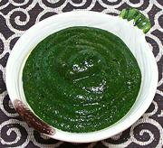

|
Sorrel / Spinach SauceSenegal - Baguedj | ||||
| Makes: Effort: Sched: DoAhead: |
1-1/4 cup ** 1 hr Yes |
This interesting sauce is served particularly with fish, but useful also for pork. The Okra provides body and adherence. This sauce is easy to make and well worth trying. | |||
|
2-1/2 6 1 1 1/2 |
oz oz T T t |
Okra Spinach Leaves (1) Lemon Juice Fish Sauce (2) Pepper |
Make - (20 min)
|